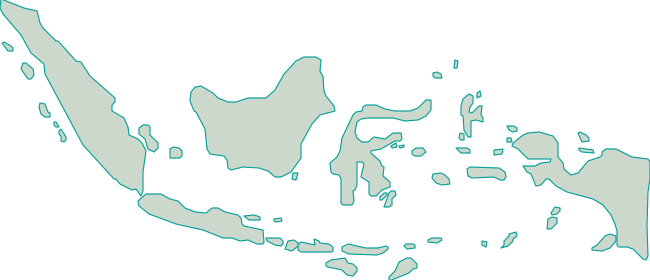

Pusat Bantuan & Kontak ANANTALIA TRANS
Temukan panduan praktis sewa armada, ketentuan operasional, dan kanal konsultasi langsung tim ANANTALIA TRANS untuk kelancaran perjalanan Anda.
Respons Cepat WhatsApp
Konsultasi Siaga 24/7 Hari Kerja & Libur
Pertanyaan yang Sering Diajukan (FAQ)
Pilih armada yang diinginkan lalu klik tombol Chat WhatsApp. Sampaikan jadwal, kota tujuan, dan jumlah peserta untuk menerima konfirmasi unit serta penawaran resmi seketika.
Komitmen Transparansi Transaksi
ANANTALIA TRANS tidak memungut biaya tak terduga di tengah perjalanan. Semua rincian fasilitas kendaraan, nama supir, dan nomor kontak aktif akan diberikan sebelum waktu penjemputan.
Hubungi Kami
Pemesanan dan konfirmasi jadwal dilayani langsung melalui WhatsApp resmi operasional untuk respon cepat dan transaksi yang aman.
Pastikan konfirmasi transaksi hanya melalui nomor resmi terverifikasi di atas.
Lokasi & Jangkauan
Cakupan Wilayah Utama
Melayani penjemputan Jabodetabek, Jawa Barat, dan rute antarkota Pulau Jawa (Jawa Tengah, DI Yogyakarta, Jawa Timur, hingga Bali).
Koordinat spesifik pool dan titik jemput cabang akan divalidasi dan dibagikan langsung oleh admin via WhatsApp sesuai kebutuhan rute Anda.
Peta Cakupan Titik Layanan & Cabang Indonesia
Jelajahi titik kota layanan mobilitas darat ANANTALIA TRANS di seluruh kepulauan Indonesia. Pilih kota atau klik pin peta untuk melihat detail wilayah dan koordinasi penjemputan.

Tidak ada titik yang cocok dengan pencarian dan wilayah ini.
Daftar Kota Jaringan Layanan
Jakarta Timur (Pool Pusat)
DKI Jakarta • Kantor Pusat
Medan & Binjai
Sumatera Utara • Titik Layanan
Padang & Bukittinggi
Sumatera Barat • Titik Layanan
Bandung & Jawa Barat
Jawa Barat • Koridor Wisata
DI Yogyakarta
DI Yogyakarta • Layanan Wisata
Surabaya & Malang
Jawa Timur • Hub Trans-Jawa
Denpasar & Bali Area
Bali • Rute Wisata Pulau
Balikpapan & Samarinda (IKN)
Kalimantan Timur • IKN Hub
Makassar
Sulawesi Selatan • Koridor Hub
Pusat Bantuan & Kontak ANANTALIA TRANS
Temukan panduan praktis sewa armada, ketentuan operasional, dan kanal konsultasi langsung tim ANANTALIA TRANS untuk kelancaran perjalanan Anda.
Respons Cepat WhatsApp
Konsultasi Siaga 24/7 Hari Kerja & Libur
Pertanyaan yang Sering Diajukan (FAQ)
Pilih armada yang diinginkan lalu klik tombol Chat WhatsApp. Sampaikan jadwal, kota tujuan, dan jumlah peserta untuk menerima konfirmasi unit serta penawaran resmi seketika.
Komitmen Transparansi Transaksi
ANANTALIA TRANS tidak memungut biaya tak terduga di tengah perjalanan. Semua rincian fasilitas kendaraan, nama supir, dan nomor kontak aktif akan diberikan sebelum waktu penjemputan.
Hubungi Kami
Pemesanan dan konfirmasi jadwal dilayani langsung melalui WhatsApp resmi operasional untuk respon cepat dan transaksi yang aman.
Pastikan konfirmasi transaksi hanya melalui nomor resmi terverifikasi di atas.
Lokasi & Jangkauan
Cakupan Wilayah Utama
Melayani penjemputan Jabodetabek, Jawa Barat, dan rute antarkota Pulau Jawa (Jawa Tengah, DI Yogyakarta, Jawa Timur, hingga Bali).
Koordinat spesifik pool dan titik jemput cabang akan divalidasi dan dibagikan langsung oleh admin via WhatsApp sesuai kebutuhan rute Anda.
Cabang Kami
Temukan lokasi cabang dan informasi kontak untuk kebutuhan perjalanan Anda.
Pool Jakarta Timur
Alamat Operasional
Jl. Raya Transportasi No. 18, Jakarta Timur
Jam Operasional
Siaga 24 Jam (Setiap Hari Termasuk Hari Libur)
Hubungi Operasional
0813 8333 3707
Hub Jawa Barat & Bandung
Alamat Operasional
Dalam tahap verifikasi resmi
Jam Operasional
Dalam tahap verifikasi resmi
Customer Care Terpusat
0813 8333 3707
Hub Jawa Tengah & Yogyakarta
Alamat Operasional
Dalam tahap verifikasi resmi
Jam Operasional
Dalam tahap verifikasi resmi
Customer Care Terpusat
0813 8333 3707
>>>>>>> origin/mainSudah Menemukan Jawaban dan Siap Berangkat?
Lihat katalog unit bus pariwisata eksekutif, microbus HiAce, atau opsi mobil keluarga premium kami, serta pelajari paket layanan perjalanan antarkota yang kami sediakan.
Hub Jawa Timur & Bali
Alamat Operasional
Dalam tahap verifikasi resmi
Jam Operasional
Dalam tahap verifikasi resmi
Customer Care Terpusat
0813 8333 3707
Sudah Menemukan Jawaban dan Siap Berangkat?
Lihat katalog unit bus pariwisata eksekutif, microbus HiAce, atau opsi mobil keluarga premium kami, serta pelajari paket layanan perjalanan antarkota yang kami sediakan.